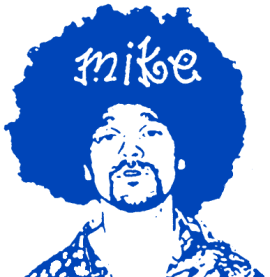

|
|

|
| СТИЛЕФОРМИРУЮЩАЯ МЕГАМАШИНА |
"Голос ПГ" Выпуск N 5
|
|
|
СТРИТБОЛ - 2001

Дэн Адын
StreetBall для меня начался днем 1-го сентября. Хоть выступление мое было запланировано на 2-ое, я решил все же прочекать ситуацию, познакомиться с исполнителями и организаторами и отправился с одним челом ("Мижган-горячая-кровь") из Питера, что сопровождал меня в этой поездке и выступлении на площадь Революции. Первым кого я встретил по ту сторону охраны был собственно "мозг и руки" события Ферапонтоff В.Г., который попросил себя сразу называть Володей. Знаком я с ним был заочно, т.е по телефону, мэйлу, ICQ...Хочу заметить что Володя сразу меня поразил ( и потом не раз еще поражал) своей "моторной энергией". Весь обвешанный рациями-телефонами он то исчезал, то появлялся, непременно успевая переброситься ЦУ с тусовавшими возле сцены рэпперами, b-boys и не знаю с кем еще. Вобщем реально мне показалось что он один и тащил на себе весь концерт : строил рэпперов, ментов, надо было б пиздил скинов... ;) - такое ощущение складывалось в целом. С ментами тоже получился небольшой прикол : я остановливаю мента и задаю ему какой-то вопрос, типа : "В какую сторону пойти чтоб купить пива.." Мент не успевает открыть рот, как появляется Ферапонтов чуть ли не берет мента за грудки и не выкидывает его из палатки со словами : " Ты его не трожь ! Енто наш Мериканский гость !" Мент долго отдает всем честь и исчезает так и не ответив на мой вопрос.
Попал я почти сразу на выступление B.I.M & Chek. Просмотрел его от начала до конца. Ребята молодцы, не прятались где-то в глубине сцены, а бодро достаточно колбасились, саунд был нормальный - слова можно было разобрать, наплевать как народу - а мне понравилось. Понравились их beats - эдакий минимал : бас и ударные, без особых инструментальных наворотов. Интересно. Если учесть что в отличии от Децела B.I.M делают сами свою музыку и слова ( а это очень высоко ценится в музыкальном мире скажем в Нью-Йорке) - то у Бычарочек большое future ( если не сторчатся конечно). Один недостаток все же подсказал рядом стоящий Мижган - это рагамафин, который делал чел ( не знаю как его) из BIM - текст оставляет желать лучшего, да и как-то не очень уместно это звучало в контексте.
Выступление этой группы сразу навеяло мне желание "свернуть Пингвина".
И желательно беременного. В палатке рядом со сценой где тусовали исполнители, я собственно познакомился с киллективом Max Вне Тела и Big Black Boots. Имея при себе Orange Buds (Оранжевые Шишки) что я привез из Амстердама, было решено свершить хип-хоп священнодействие вчетвером : Я, Межган, G-Wylx & Слон. Слон взял все обустройство на себя - и надо отдать ему должное - все лихо обустроил - не взирая на жалобы каких-то администраторов и даже Ферапонтова появившегося под конец по наводке. Всем досталось по 2 тяги - но и этого хватило чтоб Слон исчез (пробившись на Ням-Ням) на 2 часа, а оставшиеся трое безостановочно ржали и фотались у палатки. Вобщем настроение стало заметно повышаться, как объявили "Касту".
Сразу все поменялось кардинально : забегали какие-то люди - за ними менты, за ментами опять кто-то , за ними опять менты. Я накинул свой hood ( почему-то резко похолодало) и стоял покуривая у палатки, внимательно однако наблюдая. "Каста" сразу ввела публику в "творог", а рефрен "...Это Злой Дух и Каста" - прочно засел в моей башке. Откуда-то прибежал Слон с ошалелыми глазами - его перло конкретно и от Шишек и от Злого Духа и от Касты. Про Касту я не буду особо писать - все их и так знают, а мое сугубое мнение вряд ли кого интересует.
Атмосфера вокруг однако постепенно напрягалась - вернее ее напрягали какие-то люди,что все вертелись вокруг вместе со словом "скины".
На часах уже 8 часов, становится холодно ( а одет я был как-то не по погоде), пива взять негде - это кстати самый большой недостаток фестиваля - что исполнители даже пива не могут купить нигде ( как объяснил Ферапонтов - это произошло из-за контракта Адидаса с Пепси и Спрайтом) -а как запертые звери должны сидеть внутри оцепления у сцены и ни хуя не делать. Меня это и совет организаторов никуда не ходить до 10 часов (т.е до конца концерта) конкретно не устраивал (стрелки, дела, Москву хоть посмотреть). Поэтому мы спокойно вдвоем с Межганом вышли из оцепления, потусовали на площади, не встретили, между прочим, никаких скинов и спокойно поехали по делам.
Дэн Дфа
На второй день, не зная времени своего выступления, я проспал его. Должен был выступать после СТДК ( с которыми мы курили все те же Оранжевые Шишки в Питере), но проснулся в чужой квартире, почему-то в одной постели с Межганом, хотя положили нас в разные. Обычное дело. Приехали мы на площадь где-то в 3-30 вместо 1-30 - понятно никаких СТДК там уже не было ( жаль что так и не смог больше пересечься с Сержом и Баком в этой своей поездке. Да и вообще хотелось бы познакомиться с гораздо большим количеством людей, но не получилось как-то...) Погода была отличная- солнце - сцена высокая усе видно - Кремль - красота !!! Встретил снова G.-тот мне сообщил, что вчера они так с нами упыхались, что еле выступили (никто впрочем ничего не заметил я думаю).
Про свой концерт ( выступал я типа как гость - 3 трэка сделали: 2 по английски и 1 по-русски) я писать много не буду (пусть кто другой напишет). Выступление однако получилось фри-стайловое, потому как мой crew приехать не смог и поэтому со мной выступал Межган (на подпевках - которые он разучивал со мной в тамбуре плацкарта Питер-Москва !) и Даша "Круче" (прошла на сцену из толпы вообще без всяких ксив) из " Противотанковой Гранаты" зажигала на подтанцовках. Говорят со стороны смотрелось прикольно и по другому чем все остальные. Ферапонтов попросил без матов (из-за вице мэра) - однако все shitы и fuckи выкидывать не предоставилось целесообразным и возможным. Чувствовал я себя хорошо - солнышко опять же. Говорят минусовка звучала тиховато - я не знаю. Прошло вроде все нормально - банками не кидались. Когда шли с площади народ благодарил за выступление, кто-то спрашивал как мы называемся - вобщем было приятно. На Тверской встретили Жириновского - он оказывается тоже рэп любит.Публика меня приколола : пока им чего-нибудь не скажешь ("А руки высоко-высоко !") - стоят пожирают глазами, какая-то молодежь кричала мне что-то даже по-английски с первых рядов, а при слове Weed - вообще несказанно обрадовались. Вот вобщем-то и все что я помню из этого фестиваля.
Mike Mutantoff
Brooklyn, New York
|
Наверх
|
|
|